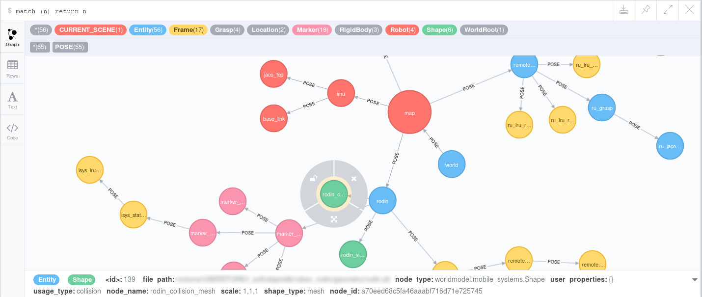

Robotic World Model using a Graph Database Backend

Highlights
- database backend based on Neo4J
- entity schema and object-graph mapping (OGM) from stored entities in the database to Python class instances
- pre-defined world model operations (e.g. add/remove objects, query relative transformation between arbitrary objects, load/dump graph from/to yaml files, …)
- pre-defined utility queries (e.g. object triples with certain properties) along-side full flexibility of CYPHER (Neo4j’s graph query language)
- interfaces to ROS
Further Material
Technology Stack: Python, Neo4J, neomodel, ROS
Work Affiliation: German Aerospace Center (DLR), in collaboration with Andreas Dömel, Sebastian Brunner, Peter Lehner